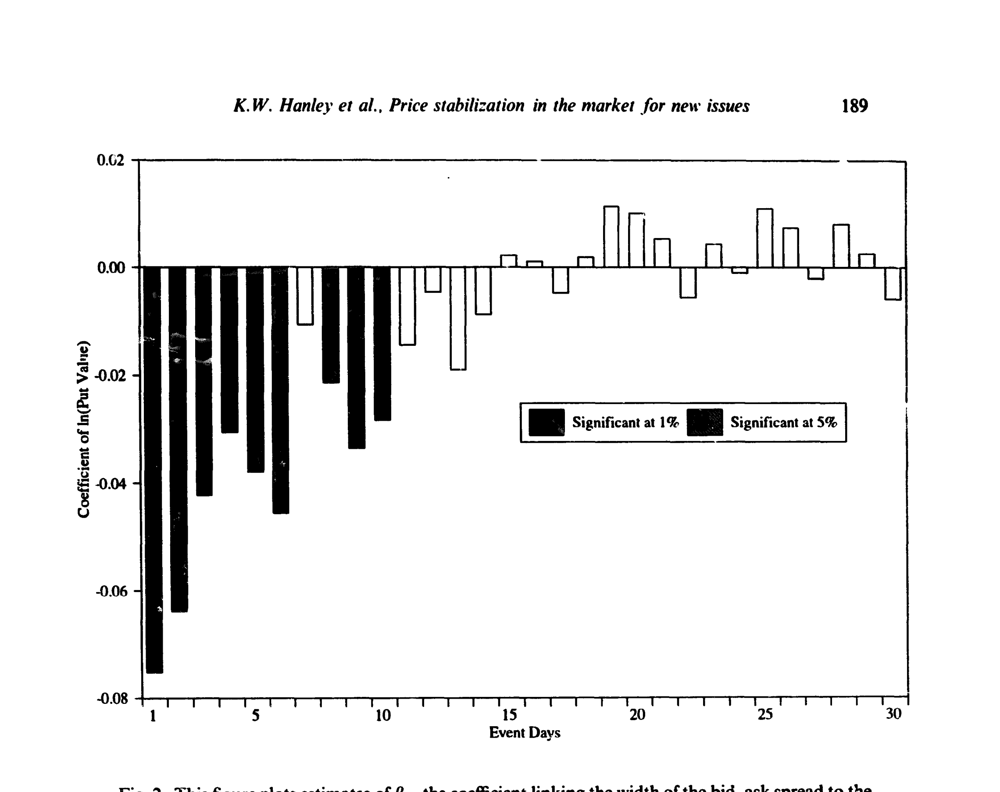
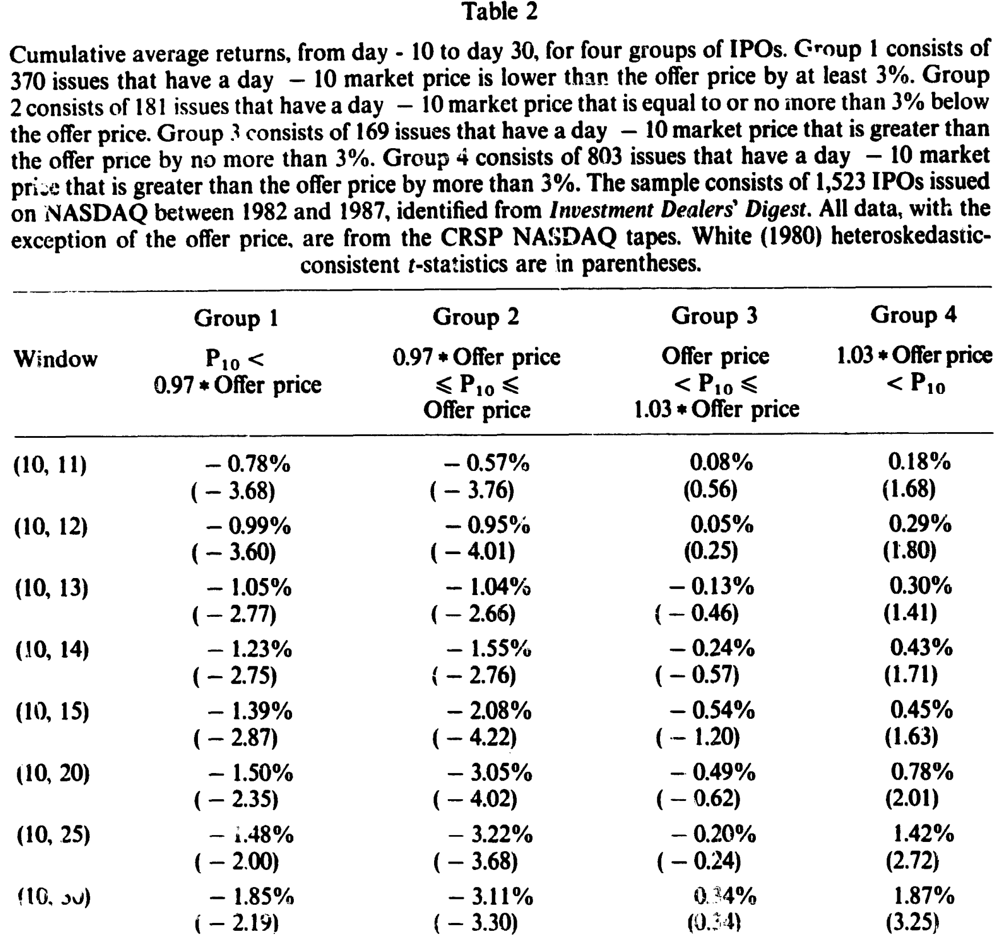
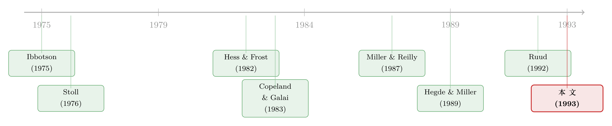

托住新股的那只手，藏在买卖价差里
本文读的是 Hanley, Kumar & Seguin (1993, JFE)：新股上市后，承销商常常在暗中「托市」——挂出一个不低于发行价的买单，把股价的下跌截断在一个地板上。可托市行为既看不见、也不再向监管申报，怎么证明它真的存在、又真的影响了价格？作者的答案出人意料地优雅：去看 买卖价差。托市等于承销商替做市商写了一份看跌期权，于是价差会在「股价贴近发行价」时收窄；而一旦托市停止，被托住的新股会应声下跌——五天里平均跌掉 -2.08%（t = -4.22）。
1 引言：一只看不见的手，在替新股「兜底」
研究新股发行 (initial public offerings, IPOs) 的文献，几乎都建立在一个朴素的假设之上：一只新股的内在价值，最终是由供给和需求自由碰撞出来的。对于那些「打折」卖出、上市即涨的新股（underpriced issues），这个假设没什么问题——价格自然往上走，谁也拦不住。
可问题恰恰出在另一半：那些定价过高 (overpriced) 的新股。它们本该跌，本该让市场尽快「发现」自己其实卖贵了。但偏偏在这时，有一只手伸了进来，把下跌按住。
这只手，就是 价格托市 (price stabilization)。按照美国证监会 1940 年的定义，它是「为了在分销期间便利证券的发行，而买入证券、以阻止或延缓其公开市场价格下跌」的行为。机制并不复杂：承销商挂出一个「辛迪加买单」(syndicate bid)，通常就挂在发行价上，吸收开盘后的抛压；一旦扛不住，要么把买价一档一档往下调，要么干脆撒手不管。由于这事极其烧钱、且受规则约束（下面会讲），它只能持续很短的一段时间。
于是一个让人挠头的难题摆在面前：托市这件事，你根本看不见。 承销商曾被要求向 SEC 报告自己是否托市，但托了多少、托到哪天，从来没人申报；而到了本文写作的年代，连「是否托市」的信息也不再披露了。一个看不见的行为，怎么去证明它存在？又怎么去衡量它对价格的影响？
这就是这篇 1993 年的论文真正迷人的地方。它没有去翻什么内部账本，而是绕了一个大弯——它说，托市会在两个地方留下指纹：一个在 买卖价差 (bid-ask spread) 里，一个在托市停止后的收益里。
2 真正关键的一步：把「托市」翻译成一份看跌期权
要看懂这篇文章，得先想清楚一件事：做市商 (dealer) 为什么怕？
做市商挂出一个买价、一个卖价，低买高卖赚价差。可一旦他按买价吃进了股票，价格随后下跌，他手里这批存货 (inventory) 就贬值了——这是做市商最实打实的损失来源。Copeland 和 Galai (1983) 早就指出，价差的宽窄，至少有一部分是由标的价格的波动率决定的：越容易暴跌，价差越宽。
现在，托市登场了。如果做市商相信，至少在短期内，有人（承销商）会在某个 地板价 (floor price) 上无条件接盘，那么他持有存货的下行损失就被截断了。作者举了个干净的例子：做市商挂买价 $10，而他相信发行价 $9 处有一个稳定的地板，那么他在这笔买入上能承受的最大损失就只有 $1。
这正是全文的「核心隐喻」：托市，等价于承销商写了一份看跌期权 (protective put)，执行价就是地板价。 这份期权由承销商「卖出」、由其余做市商「持有」。期权价值越高，做市商的潜在损失越小；在竞争性的做市商市场里，这份节省会原封不动地反映到更窄的价差上。
把这个直觉写成 Black-Scholes 欧式看跌期权的价格，就是全文的理论支点。论文设定到期期限 T = 1、隔夜无风险利率为零，得到：
其中两个标准量为
$$d_1 = \frac{\ln(\text{Bid price}/\text{Floor price}) + \sigma^2/2}{\sigma},\qquad d_2 = d_1 - \sigma.$$
每一步的来历值得说清楚。常规的 BS 看跌期权价格是 \(\text{Put} = X e^{-rT} N(-d_2) - S\,N(-d_1)\)，\(d_1 = [\ln(S/X) + (r+\sigma^2/2)T]/(\sigma\sqrt{T})\)。这里作者令 \(S\) = 收盘买价、\(X\) = 地板价 = 发行价、\(r = 0\)、\(T = 1\)，于是贴现因子 \(e^{-rT}\) 退化为 1，\(\sigma\sqrt T\) 退化为 \(\sigma\)——上面那两个看似简化的式子，就是这么忠实地从教科书公式里掉出来的。波动率 \(\sigma\) 用的是日内方差估计（论文坦承真正该用的是隔夜「收盘到开盘」方差，但 CRSP 的 NASDAQ 数据里没有，只好将就）。
有了这把尺子，托市对价差的影响就有了两个可以分别检验的预言：
- 预言一（地板的远近）：价差越窄，应该越对应于「现价贴近地板」。具体说，价差与 \(\ln(\text{Bid price}/\text{Offer price})\) 之间应是 正相关——这个比值越大（现价高高在上、地板无关紧要），托市带来的存货损失节省越小，价差越宽。
- 预言二（期权的价值）：价差与上面那份看跌期权的价值应是 负相关——期权越值钱，做市商越安心，价差越窄。
而由于托市烧钱、且依法必须在分销完成后终止，这两种关系都只能维持很短的时间，然后随事件时间衰减。
3 识别策略：用价差「反推」看不见的托市
怎么把这两个预言变成可检验的回归？作者的做法朴素而扎实：对上市后第 1 天到第 30 天的每一天，单独跑一个横截面回归（这种「逐日横截面」的做法沿用自 Ibbotson (1975)、Miller & Reilly (1987)、Hegde & Miller (1989) 等）。被解释变量是相对买卖价差的对数，控制变量是已知会影响价差的那几样东西：
$$\ln(\text{Relative spread}_{jt}) = \alpha_t + \beta_{1t}\ln(\text{Volume}_{jt}) + \beta_{2t}\ln(\text{Number of market makers}_{jt})$$ $$+\ \beta_{3t}\ln(\text{Price}_{jt}) + \beta_{4t}\ln(\text{Volatility}_{jt}) + \beta_{5t}\ln(\text{Stabilization proxy}_{jt}).$$
关键的系数就是 \(\beta_{5t}\)。由于是 对数-对数 (log-log) 设定，系数本身就是 弹性 (elasticity)，可以直接比较不同变量的相对经济重要性——这是一个很讨巧的设计。
托市的代理变量 (stabilization proxy) 有两个，正好对应上面两个预言：第一个是「现价与地板的远近」\(\ln(\text{Closing bid price}/\text{Floor price})\)，预言 \(\beta_{5t} > 0\) 且随时间衰减；第二个就是上一节那份 BS 看跌期权价值，预言 \(\beta_{5t} < 0\) 且随时间衰减。
波动率本身也得小心处理。作者注意到事件时间上存在异方差——平均绝对收益在第 1 天高达 9.61%，到第 10 天降到 1.69%，第 40 天 1.46%。于是波动率被定义为一个会「换挡」的量：前六天用第 1–11 天收益的标准差（一个常数），第七天起改用以当天为中心、前后各五天的滚动标准差。
这里有一个绕不开的内生性隐忧：托市本身会截断收益分布、压低观测到的波动率（这正是 Ruud (1992) 的论点）。如果波动率被托市「污染」了，那它作为控制变量就不干净。作者对此的回应是稳健性——改用上市后第 1–60 天、乃至第 61–120 天的收益来估波动率（这些时段托市早已结束、污染更小），结果「基本不变」。
4 数据
初始样本是 1982 年 1 月到 1987 年 9 月间全部 2,758 宗 包销 (firm-commitment) 新股，来自 Investment Dealers' Digest 公司数据库（发行日、CUSIP、发行价也都取自此处）。为了拿到买价、卖价和成交量，作者要求公司最初在 NASDAQ 挂牌交易、且上市当日成交量非零——筛下来得到最终的 1,523 宗 IPO。买卖价差、日成交量、做市商数量、市场价（买卖中点）等均来自 CRSP 的 NASDAQ 磁带。由于缺失值，单个横截面回归用到的观测数在 1,466 到 1,502 之间。
5 主要结果：指纹的两次显形
第一次显形，在价差里。 用看跌期权价值做代理时，\(\beta_{5t}\) 的逐日估计如图 2 所示：在上市后的头十天里（除了第 7 天）一致地 显著为负，正如理论所料；此后迅速衰减、归于不显著。用「现价/发行价」做代理时（论文的图 1），\(\beta_{5t}\) 则一致地 显著为正，同样在第 10 天前后失去显著性。两个代理高度相关（在全部 45,237 个观测上 \(R^2 = 0.546\)），所以它们其实是在从两个角度讲同一个故事。更妙的是，作者指出在头几天里，弹性最大的那个变量正是托市代理——它在解释价差上的经济分量，盖过了成交量、价格、波动率这些「正统」决定因素。

Figure 2
作者把这十天里系数的衰减，干净利落地归因于托市项目的中止或放弃——毕竟拖太久既烧钱、又可能触犯《证券交易法》的反操纵条款。
第二次显形，在收益里。 如果托市只是「延缓」下跌而非改变内在价值，那么托市一旦撤走，被托住的新股就该应声补跌。作者把样本按上市后第 10 天的价位切成四组，再看第 10 天之后的累计收益（表 2）。

Table 2
结果非常对称：在第 10 天之后的五天里（窗口 (10,15)），
- 第 1 组（现价低于发行价 3% 以上）累计收益
-1.39%（t = -2.87）； - 第 2 组（现价在发行价下方、但不超过 3%）累计收益
-2.08%（t = -4.22）； - 第 3 组（现价高于发行价、不超过 3%）
-0.54%（t = -1.20，不显著）； - 第 4 组（现价高出 3% 以上）
+0.45%（t = 1.63，不显著）。
注意第 2 组的跌幅反而比第 1 组更大——这恰好印证了 1940 年那份 SEC 文件的洞见：托市只对那些「既非大获成功、亦非彻底失败」的发行才划得来。真正失败的发行（第 1 组），抛压太大、承销商根本托不起、也就早早撒手了；反而是第 2 组，价格只是微微滑落，最值得托、也被托得最久，因此停手后跌得最狠。而本就高出发行价的第 3、4 组，由于规则禁止在发行价之上托市，第 10 天时本就没有托市可言，于是它们之后纹丝不动——这是一个漂亮的「安慰剂组」。再往后看，第 2 组到窗口 (10,20) 累计跌至 -3.05%（t = -4.02），跌势还在延续。
作者还做了一个更聪明的检验，把「托市在第 10 天结束」这个武断假设也放开：允许托市在头 15 天内任意一天结束，并把「第一次出现收盘买价跌破发行价」那天，认定为托市终止之日。据此把样本分成 772 宗「被托市」(Sample) 和 751 宗对照 (Control)。结果，对照组的平均五日收益（回归截距）为 +0.76%（t = 2.50），而被托市组比对照组要 低 2.47%（t = -5.69）。无论换累计窗口、用净市场收益、还是剔除各种干扰，结论都站得住。
6 文献脉络
这条研究的有趣之处，在于它一直在和「托市到底有没有用」这个老问题较劲。
最早，Stoll (1976) 借助当年还能拿到的 SEC 托市信息做了直接检验：在 50 宗新股里，被托市的发行在头十天比未托市的低 4.3%，但这个差异并不显著。他于是困惑地写道，托市看上去是在价格下跌时被动出手、想撑住价格，可「它显然不成功，让人不禁要问为什么还要做它」。接着，Hess 和 Frost (1982) 用 152 宗成熟公用事业增发，发现托市在发行后十四天里对价格毫无影响。

然后，理论的另一条线在悄悄铺路。Copeland 和 Galai (1983) 把买卖价差与标的波动率联系起来，给「截断分布会压低价差」埋下了伏笔。Miller 和 Reilly (1987)、Hegde 和 Miller (1989) 把视线投向 IPO 的价差行为，后者用 540 宗 IPO 跑模型，却发现托市对价差的直接影响「微不足道」(negligible)。
但真正的转折点是 Ruud (1992)：她不再去问「托市有没有把价格抬高」，而是论证 托市会截断收益分布——模拟出来的「被价格支撑」的收益，其统计特征与真实数据高度相似。本文正是站在 Ruud 的肩膀上，把「截断分布」这个想法推进了一步：截断不仅改变收益分布，还应该通过做市商的存货风险，留痕在买卖价差里。于是这篇论文用看得见的价差和收益，间接但有力地证明了那只看不见的手的存在。（关于上市初期承销商「托底」的另一种证据，可参见《开盘头十分钟之后，新股就「不动」了——因为有人在替它托底》；关于新股定价是否「有效率」的争论，可参见《新股定价，到底「有没有效率」？》。）
评论与延伸（Q&A + 研究方向）
(a) 几个可能的疑问
Q：既然看不见托市，凭什么说价差变窄就是托市干的，而不是别的什么？
这正是识别的软肋，作者的防线是「分组对照 + 时间衰减」。规则禁止在发行价之上托市，所以高出发行价的第 3、4 组天然是安慰剂——它们价差里不该有托市信号，而结果也确实在它们身上看不到显著效应；同时，效应在第 10 天前后一致消失，与「托市必须在分销完成后终止」的制度约束吻合。两条证据合在一起，比单看价差要可信得多，但终究是间接推断，不能完全排除其它在头十天衰减的遗漏变量。
Q：把波动率放进回归，会不会「吃掉」托市的效应？毕竟托市本身会压低波动率。
会有这个担心，而且方向明确：托市截断分布 → 压低观测波动率 → 波动率这个控制变量被污染。作者的处理是用托市结束之后（第 1–60 天、61–120 天）的收益重估波动率，结果基本不变。这缓解了顾虑，但没有彻底解决——更干净的做法需要一个不受托市污染的波动率工具变量。
Q：用 \(T=1\)、\(r=0\)、日内方差去算这份看跌期权，是不是太粗糙了？
作者自己也承认。理论上该用「收盘到开盘」的隔夜方差，但 CRSP NASDAQ 磁带没有，只能退而求其次用日方差；\(T\) 的选择也被验证为不影响结论。好在两个代理（期权价值 vs. 现价/地板比）高度相关（\(R^2 = 0.546\)），结论并不依赖期权定价的精确性——粗糙的期权值和简单的价格比讲的是同一个故事。
Q：第 2 组跌得比第 1 组更狠，这不反直觉吗？跌得最惨的不该是最差的发行吗？
表面反直觉，实则是全文最漂亮的一笔。被托得最久的，不是最差的发行（那种根本托不起、早早放弃），而是「不上不下」的第 2 组——价格只微跌、最值得托。托得越久、停手时离内在价值越远，补跌就越大。这与 1940 年 SEC 文件里「托市只对非大成功也非大失败的发行才有意义」的判断严丝合缝。
Q：这和「新股折价」(underpricing) 是两回事吗？
是两个相关但不同的现象。折价讲的是发行价相对上市后价格定低了（上市即涨）；托市讲的是上市后承销商主动撑住价格、不让它跌。本文研究的恰恰是折价文献长期忽略的「另一半」——定价偏高、本该下跌的那批发行。Miller & Reilly (1987) 曾记录过上市当天定价过高的发行在二十一天后有显著负收益，却没能解释；本文用托市给出了一个机制。
Q：托市对投资者到底是好是坏？
SEC 自己承认这是一种「操纵」，只不过是「消极的」操纵——只阻止下跌、不主动推高。它让包销发行得以成功、便利了企业融资；但代价是把定价过高的证券更顺滑地分销给了公众。本文不评判好坏，只是冷静地指出：托市是真实存在的，它确实把价格暂时托在了均衡之上，而停手之后，账迟早要还。
(b) 几个可能的研究问题与提案
1. 把这套「价差指纹」搬到公司债的新发市场。
【经济故事】公司债新发同样有承销商和「稳定」操作，而公司债的流动性、买卖价差对存货风险极其敏感。如果债券承销商也在用看跌期权式的托底，那么新债上市初期的价差与「现价/发行价」的关系，应当呈现与本文类似的衰减模式。 【可行性】中。TRACE 提供了债券逐笔成交与买卖报价，发行信息可由 Mergent FISD 补齐；难点在于公司债成交稀疏、价差估计噪声大，需要借助「按成交量自适应」的流动性度量。识别上可复用本文的分组+时间衰减设计。
2. 监管披露的自然实验：托市信息「关灯」前后。
【经济故事】本文写作年代，托市是否申报的信息已不再公开。如果能找到某次披露规则变更（例如要求或取消托市报告）的时点，就能用 双重差分 (difference-in-differences, DiD) 检验「信息透明度」本身是否改变了托市的强度与价差效应。 【可行性】中偏低。关键看能否找到一个干净的规则断点和配套数据；美国 Reg M（1997 年取代 Rule 10b-7）是个天然候选。挑战在于同期市场结构（小数报价改革等）也在变，需要小心剥离。
3. 外资持有人与托市后的补跌。
【经济故事】如果某些发行的认购方以外资机构为主，他们在托市停止后的抛售行为可能与本地投资者不同（更可能「赖着不走」或更快撤离），从而放大或抑制本文记录的补跌。这能把托市文献和外资持有人文献接上。 【可行性】中。需要 IPO 配售层面的投资者类型数据（13F、各国登记簿），匹配难度不小；识别上可比较外资认购比例高低不同的发行在第 10 天后的收益差异。
4. 用看跌期权值做价差的结构估计。
【经济故事】本文是简约式 (reduced-form) 地把期权值塞进回归。能否反过来，从观测到的价差结构里结构化地反解出市场隐含的「地板价」和托市强度？这相当于把托市当成一个隐变量，用价差数据去估计它。 【可行性】高。数据现成（CRSP/TAQ），方法上是一个状态空间或隐变量估计问题，doable；风险在于识别假设较强，需要外生约束来钉住地板价。
参考文献
- Copeland, T. E., & Galai, D. (1983). Information Effects on the Bid-Ask Spread. Journal of Finance 38(5), 1457–1469.
- Hegde, S. P., & Miller, R. E. (1989). Market-Making in Initial Public Offerings of Common Stocks: An Empirical Analysis. Journal of Financial and Quantitative Analysis 24(1), 75–90.
- Hess, A. C., & Frost, P. A. (1982). Tests for Price Effects of New Issues of Seasoned Securities. Journal of Finance 37(1), 11–25.
- Ibbotson, R. G. (1975). Price Performance of Common Stock New Issues. Journal of Financial Economics 2(3), 235–272.
- Miller, R. E., & Reilly, F. K. (1987). An Examination of Mispricing, Returns, and Uncertainty for Initial Public Offerings. Financial Management 16(2), 33–38.
- Ruud, J. S. (1992). Underwriter Price Support and the IPO Underpricing Puzzle. Journal of Financial Economics (working/forthcoming).
- Stoll, H. R. (1976). The Pricing of Underwritten Offerings of Listed Common Stocks and the Compensation to Underwriters. (cited in text).
- White, H. (1980). A Heteroskedasticity-Consistent Covariance Matrix Estimator and a Direct Test for Heteroskedasticity. Econometrica 48(4), 817–838.